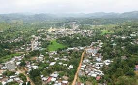
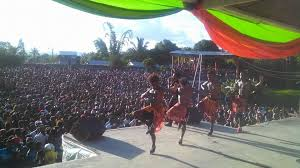
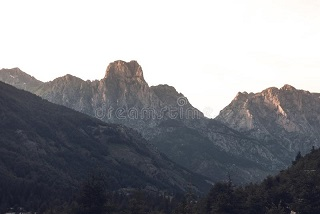

Vavatenina
Vavatenina is a smale village in the east of Madagascar which is in part of Analanjirofo region. These are some information about Vavatenina.
The meaning of Vavatenina.
When there were colonisaters here in Madagascar, Vavatenina was still a very small town hidden in the forest. Before entered in that town you could see a gate made of some plants called "tenina".
Vavahady means gate
and Tenina
is a kind of plant. They combined those two words and it
becomes Vavatenina. That is the reason why they call it Vavatenina.
About the culture
Malagasy has a particular society that has their own beleifs, and the ways of life.
People in vavatenina are Betsimisaraka which is one of Malagasy tribe. Every year they celebrate a
season of cloves which is called Festival Jerijery.
During that time there is a Tangalamena
's speech which is Malagasy culture(Tangalamena is the
oldest man in a town) and then presidents' speechs which is in ordered. At the end there is carnaval that is joind by students in the whole town even those who are from the countryside.
After that, there is talent shows folowed by singer's shows during 4days.

The form of this town
It is moutainous town serounded by a river called Sahavatoina.
Some people there survive from that river by searching poweder golden. And that can afford people's lives who have not job or some land for farming.
